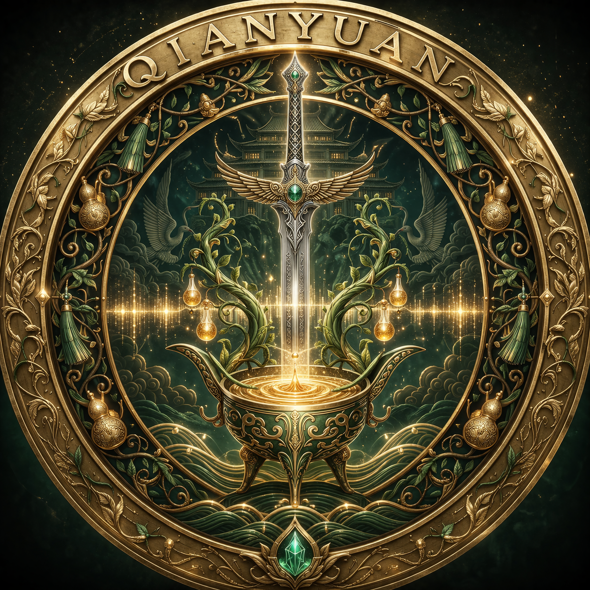
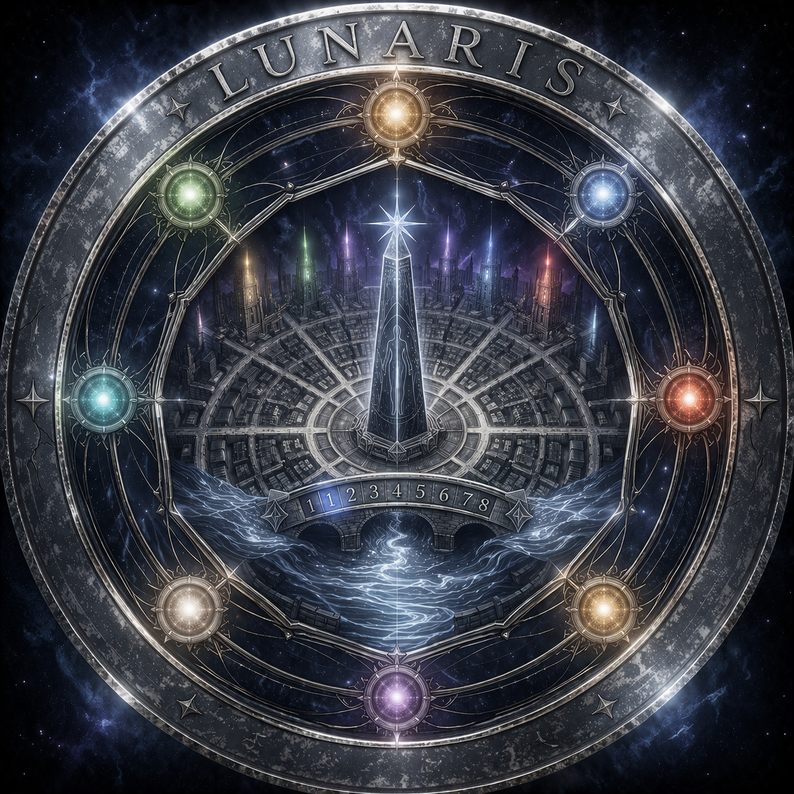
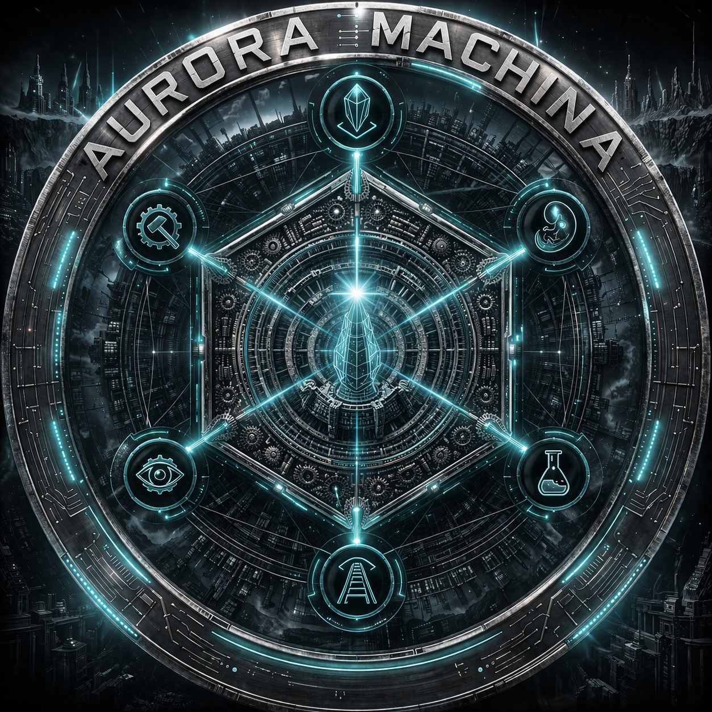

Open Worldbuilding · EC 174年
World Concept
这个世界没有神，但有仙术、魔法、凝晶、科技，以及一道永远无法愈合的裂缝。
一切的设定都是从世界内部出发，为「世界」自己所记录。
从你感兴趣的那扇门进去，里面比你想象的更深
世界平衡机制 · 三种层级
八种原素

仙术与剑术的帝国，以仙酒为权力核心。谁控制仙酒，谁就控制国家。天道信仰。仙帝、酿酒坊、仙剑道三方制衡，平衡了近千年。东方王朝权谋美学。

魔法师建立的研究院城市，靠八塔系统持续监测魔力浓度，用写进体制的记录代替会遗忘的人类记忆。「知止者存，逾矩者灭」刻于南城门。西幻魔法学院气质。

凝晶科技财团组成的国家，六大财团统治，进步教义。完全依靠凝晶能源驱动——但凝晶矿脉正在枯竭。赛博朋克/蒸汽朋克工业风格，市民等级制度森严。
EC 174年 · 世界状态指标
世界本源所在，原素、生息、魔力追溯到最根本层面的来源。先于「空间」概念而存在，不在任何坐标系内。
与现实世界的连接正在弱化——这是世界平衡恶化的深层原因。目前无已知的主动进入方式。特定条件下交叠时，产生超越常规的奇异现象。
失乐园是世界「从何而来」的答案。
与现实能量体系完全隔绝的封闭空间，虫族的来源地。EC 50年大撑裂事件将虚空强行打开缺口，形成永久性的虫族裂隙，此后持续向现实输出虫族与异毒。
虚空的能量介质（异毒）与现实体系完全不相容，无法被世界平衡机制识别。
虚空是「之外还有什么」的一种可能性。
按兴趣方向选择
通用阅读顺序建议